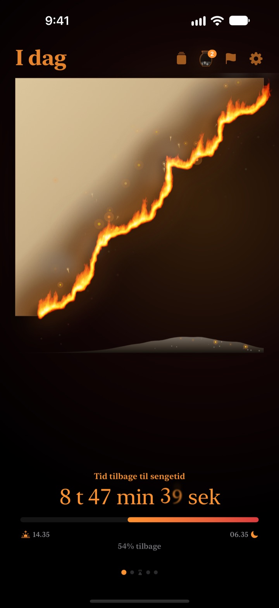
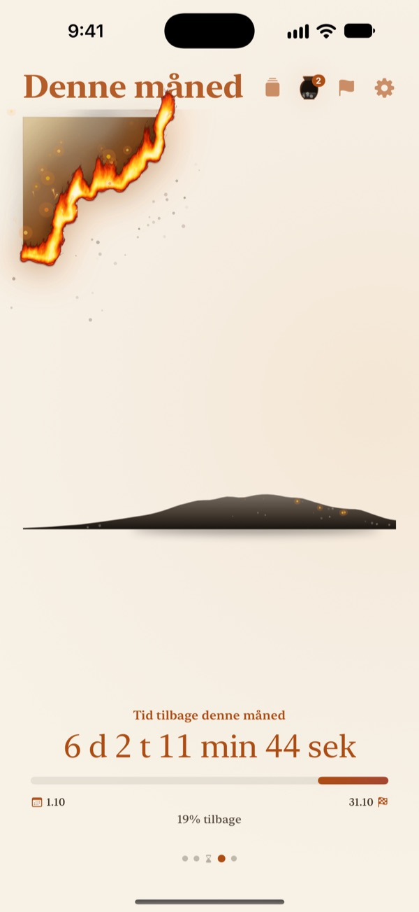
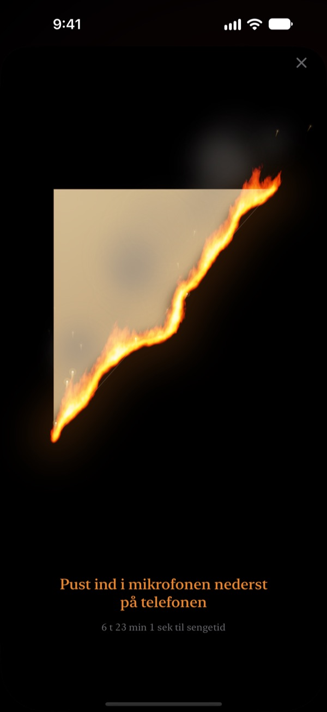
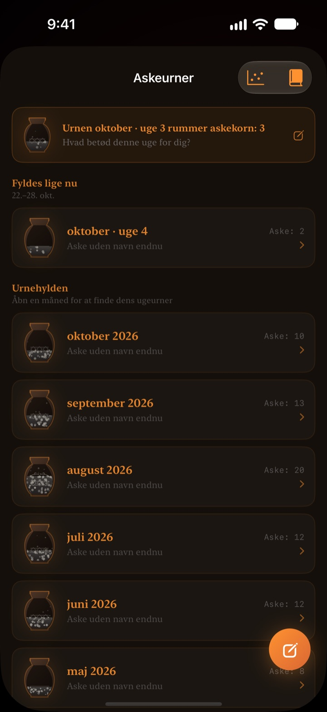

Det, der er tilbage af i dag,
brænder foran dig
En aften, der ser harmløs ud som et tal, føles anderledes som pergament i flammer. En halv time før sengetid puster du på skærmen, slukker ilden og afslutter dagen.
Det brændende pergament, udpustningen og refleksionerne er gratis.

Prøv at puste det ud
Ryk uret frem til lige før sengetid, og hold så knappen inde eller pust i mikrofonen.
Er klokken pludselig blevet midnat?
Du spiser aftensmad, sætter dig et øjeblik, og så er dagen væk. Tallene på uret ser ens ud hver aften, så du mærker ikke, at tiden løber ud. Brændende Pergament viser resten af dagen som pergament, der brænder ned, så du opdager det, før aftenen forsvinder.
Dag, uge og år brænder ned
Fra du vågner til sengetid brænder pergamentet langsomt. Se på samme måde, hvad der er tilbage af ugen, måneden og året.
Tilføj et mål med en dato som frist, så tæller den ned ved siden af.

Pust dagen ud
Fra 30 minutter før sengetid puster du på det brændende pergament og slukker ilden. Kun styrken af dit pust bruges, og intet optages.
Brudstykket, der er tilbage, bliver gemt. Vend det, og skriv en linje om dagen på bagsiden.

Tiden, der gik, bliver til aske
Se tilbage på dagen med en linje, og sæt den som en prik i en graf med to akser efter, hvad tiden gik til. Refleksionerne samler sig i askeurner for uge og måned og kan læses igen i Refleksionsbogen.
Askens strøm viser, hvor tiden blev af, med en fordelingsgraf og en glødekalender.

Kom i gang i tre trin
- 1
Vælg op- og sengetid
Tryk på tandhjulet øverst til højre. Pergamentet tændes og slukkes efter det.
- 2
Vælg periode
Swipe mellem dag, uge, måned og år, eller skjul de sider, du ikke bruger, i Indstillinger.
- 3
Tilføj en widget
På hjemmeskærmen eller låseskærmen kan du se tiden tilbage uden at åbne appen.
Her kan du se tiden tilbage
- Dag
- Fra du vågner til sengetid
- Uge · Måned · År
- Hvad der er tilbage af ugen, måneden og året
- Fritid
- Ugens pergament brænder kun i de timer, du holder fri til dig selv (Pro)
- Frister
- Tid tilbage til et måls dato. Én er gratis
- Widgets på hjemmeskærmen
- Dagens pergament i lille, mellem og stor. Uge, måned, år og frister i lille og mellem
- Widgets på låseskærmen
- Rund, rektangulær og på én linje
- Dynamic Island · Live-aktivitet
- Fra en time før sengetid eller hele dagen. Vælg eller slå fra i Indstillinger
Udvid Dynamic Island for at se det brændende pergament med hele nedtællingen.
Pergamentet er gratis. Pro rummer mere.
Gratis
- Pergamenter for dag, uge, måned og år
- Pust flammen ud og saml brudstykker
- Refleksioner på én linje, askeurner og Refleksionsbog
- Morgentjek, eventuelt med søvndata fra Sundhed
- Widgets til hjemme- og låseskærm, Dynamic Island
- Én frist
Brændende Pergament Pro
- Brænd kun din egen fritid
- Temaer: Måneskins-hanji, Celadon, Solnedgang
- Flammer: Prærieild, Gløder, Stjernekaster
- Del dine brudstykker som kort og plakater
- Eksportér Refleksionsbogen som PDF
- Tolv måneders askestrøm
- Ubegrænsede frister
Ikke et abonnement. Ét køb for altid, inklusive alle Pro-funktioner, der kommer senere.
Ny enhed? Tryk på Gendan køb i Indstillinger.
Ofte stillede spørgsmål
Widgetten viser en anden tid end appen.
iOS tegner ikke widgets på hjemmeskærmen igen hvert sekund. Når du åbner appen, passer de igen. En nedtælling sekund for sekund finder du i Dynamic Island og live-aktiviteten på låseskærmen.
Jeg puster, men ilden går ikke ud.
Du kan først puste den ud 30 minutter før sengetid. Tjek, at adgang til mikrofonen er tilladt, og pust jævnt i cirka et sekund tæt på mikrofonen nederst på iPhone. En kort lyd er ikke nok.
Bliver min stemme optaget?
Nej. Den måler kun, hvor hårdt du puster. Ingen lyd optages eller gemmes.
Hvad vises, mens jeg sover?
Efter sengetid dukker et brændende hjerte op og viser, hvor langt natten er nået frem til du vågner. Om morgenen spørger appen, om du kom i seng til tiden; var du sent på den, starter dagens pergament tilsvarende svedet. Forbundet til Sundhed bruger den dit registrerede indsovningstidspunkt uden at spørge.
Hvornår kommer notifikationerne?
En time før sengetid. Hvis de ikke kommer, så tjek Indstillinger > Notifikationer > Brændende Pergament.
Bruger appen meget strøm?
Nedtællingen i appen skifter hvert sekund, men widgets opdateres strømbesparende af iOS, så påvirkningen er lille.
Hvor gemmes mine data?
Op- og sengetid, frister, refleksioner og urner bliver på din enhed. Udvikleren modtager kun anonym brugsstatistik, nedbrudsdiagnostik og den feedback, du selv sender. Ingen reklamer, ingen sporing.
Er Pro et abonnement?
Nej. Du betaler én gang og har det for altid. På en ny enhed trykker du på Gendan køb i Indstillinger.
Fejl, idéer eller andre spørgsmål? Skriv til leeo@kakao.com.